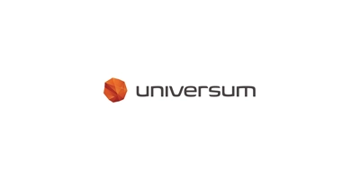
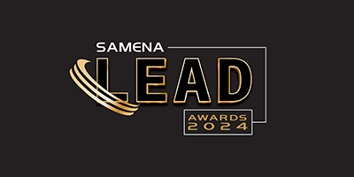
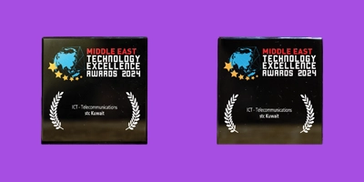
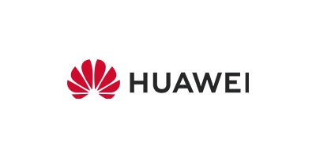
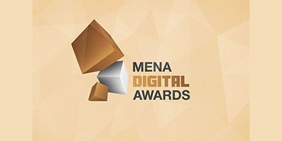
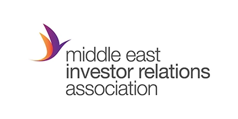
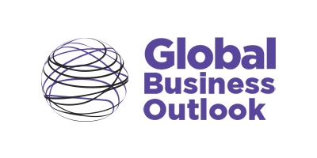

stc Ranked as the ideal employer of choice in Kuwait
stc was ranked the number one ideal employer of choice for engineers
and IT professionals in Kuwait
according to Universum’s custom research in comparison with 19 of the strongest brands
in Kuwait.

stc wins ‘FWA Overall Experience Award’
stc has won the ‘FWA Overall Experience Award’ at the SAMENA
Council’s Leadership &
Excellence (LEAD) Awards 2024 in Dubai, UAE. The recognition highlights stc’s
exceptional
developments in Fixed Wireless Access (FWA) solutions, further strengthening its
position as a
pioneer in providing ICT solutions and exceptional customer experience.

stc receives ‘ICT - Telecommunications Award - Kuwait’
stc has won the ‘ICT -Telecommunications Award – Kuwait’ for the
entry 5G at the Middle East
Technology Excellence Awards – a distinguished platform devoted to acknowledging and
celebrating the pioneers of technological innovation.

stc receives “Best Entrepreneurial Landscape CSR Framework -
‘weyak’ -
Kuwait 2024”
stc received the “Best Entrepreneurial Landscape CSR Framework –
‘weyak’ – Kuwait 2024”
award from International Finance (“IF”), a renowned financial publication that
recognizes
industry talents, leaderships skills, industry net worth and capability on an
international
platform.

stc wins Innovation and Achievement Award in (FWA 5G) baity 5G
Customer
Growth and ‘Outstanding Network Operations Award’
stc won Innovation and Achievement Award in (FWA 5G) baity 5G
Customer Growth and
‘Outstanding Network Operations Award’ at Huawei’s Operations Transformation Forum for
its
advancements in network management & reliability and setting new industry benchmarks for
FWA (baity 5G) services and network solutions in regional markets.

solutions by stc wins top honour in ‘Best Use of Digital -
Technology/
Telecommunications” category
solutions by stc, the specialized business arm of Kuwait
Telecommunications Company – stc,
won the top honour within the ‘Best Use of Digital by Sector –
Technology/Telecommunications‘
category at the MENA Digital Awards, a bespoke awards show promoting digital innovation
and
media in the MENA region.

3rd place as “Leading Corporate for Investor Relations” in Kuwait.
stc secured 3rd place as “Leading Corporate for Investor Relations”
in Kuwait at the MEIRA
2024 Awards ceremony, that was held in Abu Dhabi.

stc and solutions by stc win two distinguished awards
stc won the ‘Best Corporate Governance Telecom Company – Kuwait
2024’, and its subsidiary,
solutions by stc, won the ‘Best Customer Experience Digital Platform for B2B – My
Business –
Kuwait 2024’ at the Global Business Outlook (GBO) Awards 2024. The awards ceremony was
held
in Dubai, United Arab Emirates, and aimed at recognizing organizations that have
demonstrated
outstanding achievements in different categories related to business and innovation.